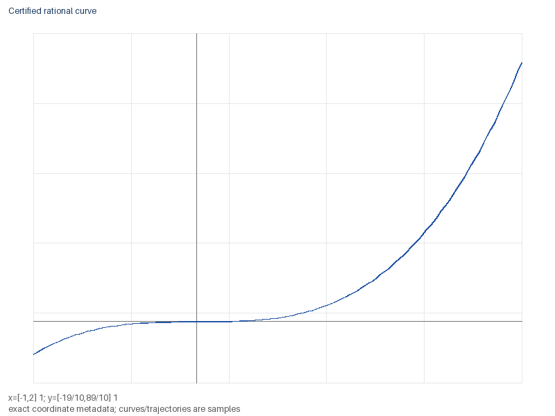

Sintetico: True
Bounded examples. NIST data are published observations; other examples are synthetic.
Evidencias:
Bounded examples. NIST data are published observations; other examples are synthetic.
Evidencias:
Bounded examples. NIST data are published observations; other examples are synthetic.
Evidencias:

| Check | Outcome |
|---|---|
| Published NIST numerical reference | passed |
| Durable agent resume | passed |
| Rational basis holdout | matched |
| Signed delta exchange | passed |
Evidencias: 9eed1c8826a38cf24654fee24f84512a9fcfc8d5b56fd7a09114a957dcc6088b, 9c5acec0437fce273798a9f22d1e243c36790ae477a87b6bba72adca5b04ab0e, 6a3ffb90d9449d43e21b68f32af5401aec416639a9d79e73feea8249b6f5e834, b63ec06bf5dc75bcd400f97097748a1a147898639c3de64b42a7642124c39cb3
Bounded examples. NIST data are published observations; other examples are synthetic.
Evidencias:
[ref_9461a7201cac9c1b4e5b5bb0] J. W. Longley (1967). An Appraisal of Least Squares Programs for the Electronic Computer from the Viewpoint of the User. https://github.com/statsmodels/statsmodels
Computational checks only; no global novelty, physical validation or independent peer review.